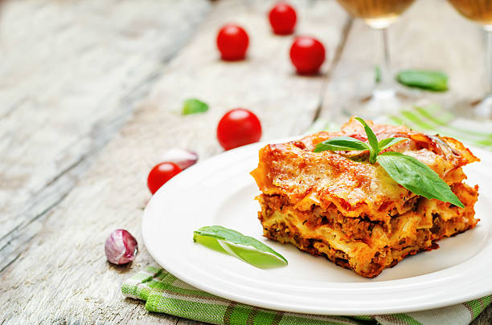

Lasagna

Description
Lasagna is a classic Italian dish with layers of pasta, cheese, sauce, meat, and seasonings. Often served with garlic bread, salad, and a glass of wine.
Ingredients
- 1 box lasagna noodles (16 noodles)
- 1 lb hot Italian sausage
- 2 eggs
- 15 oz ricotta cheese
- 4 cups grated mozzarella cheese
- 1/2 cup grated parmesan cheese
- 2 Tbsp Italian parsley
- 2 24-oz jars marinara sauce
Directions
- Cook sausage in a skillet over medium heat until well browned. Drain.
- Bring a large pot of salted water to boil. Cook lasagna noodles until al dente, roughly 8-10 minutes. Drain.
- In a medium bowl, combine eggs, Ricotta, 2 cups of the mozzarella, parmesan, and parsley. Stir until well-combined.
- In a 13x9 casserole pan, spread 1 cup of marinara. Be sure to coat the whole pan.
- Layer as follows:
- 4 lasagna noodles, 1/3 of cheese mixture, 1/2 of sausage, 1 cup of mozzarella, and 1 cup of marinara.
- 4 lasagna noodles, 1/3 of cheese mixture, and 1 1/2 cups of marinara.
- 4 lasagna noodles, remaining cheese mixture, remaining meat, and 1 cup of marinara.
- 4 lasagna noodles, remaining sauce, and remaining mozzarella.
- Cover in foil and bake in oven for 60 minutes.
- Uncover and cook until cheese is melted, about 5 minutes.
- Let cool before serving.
Home